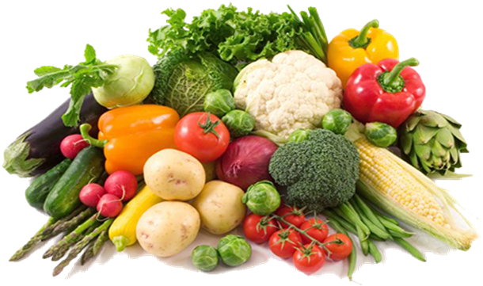

Alimentação Saudável
Início
Cardápios
Nutrição
Dicas
Dicas Práticas
Inclua pelo menos 5 cores de frutas e verduras nas refeições diárias.
Prefira lanches naturais ao invés de industrializados.
Beba água regularmente ao longo do dia.
Envolva os alunos na preparação de alimentos saudáveis.
